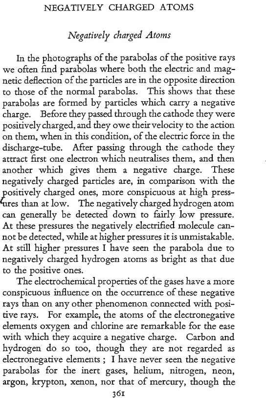

CHAPTER XI#
Discharge of Electricity through Gases; The Discovery of the Electron; Positive Rays#
T was a most fortunate coincidence that the advent of Iresea.rch students at the Cavendish Laboratory came at
the same time as the announcement by Réntgen of his discovery of the X-rays. Ihad a copy of his apparatus made and set up at the Laboratory, and the first thing I did with it was to see what effect the passage of these rays through a gas would produce on its electrical properties. To my great delight I found that this made it a conductor of electricity, even though the electric force applied to the gas was exceedingly small, whereas the gas when it was not exposed to the rays did not conduct electricity unless the electric force were increased many thousandfold. It required an electric force of about 30,000 volts per centi- metre to make electricity pass through air at atmospheric pressure when not exposed to the rays, while a minute fraction of this was sufficient when the rays were going through it. This was a matter of vital importance for the investigations on the passage of electricity through gases, 2 problem at which I had been working for many years. Until the rays were discovered the only ways of making electricity pass through a gas were either to apply very great electric forces to it, or else to use very hot gases such as flames. In either case it was exceedingly difficult to get anything like accurate measurements. The results were apt to be very capricious, apparently depending upon
causes which it was very difficult to locate. We know now that these two phenomena are the most complex and difficult in the whole range included in the subject of conduction of electricity through gases. To have come upon 2 method of producing conductivity in the gas so controllable and so convenient as that of the X-rays was like coming into smooth water after long buffeting by heavy seas. The X-rays scem to tumn the gas into a gaseous electrolyte. Indeed, many of the difficulties which had been met with in the carly stages of the conduction through liquid electrolytes had been met with in those of the conduction through gases. One of these difficulties in the case of liquid electrolytes was to see how the positively and negatively charged atoms in a molecule of the electrolyte could be separated from cach other by the very small electric forces which are adequate to pro- duce conduction. The attraction between these oppositely charged atomsis of the order of 1,600,000,000 volts per cm., and yet a force of a fraction of a volt per centimetre is sufficient to make an atom with a positive charge appear at one electrode and one with a negative charge at the other. To explain this Grotthus, in 1805, introduced the idea that the molecules with their + and - atoms formed themselves into chains, like iron filings when acted upon by a magnet and that the + atom in one molecule went close to the - atom of the adjacent molecule in the way indicated in the figure. AB, CD, EF represent molecules. (23) (ED) ED The attraction of the positive charge of B on the atom A is balanced by the repulsion due to the negative charge on C, which is close to B. Each atom, except those at the end, has a close neighbour of opposite sign, so that the two
GROTTHUS’ CHAINS
balance each other. Thus the forces exerted by all the
atoms except those at the end of the chain are balanced,
and the forces on those at the end correspond to the forces
between two particles separated by the length of the chain,
instead of by the distance between two atoms in one mole-
cule. A very short chain would be all that Was needed to
make the attraction between the oppositely. charged atoms
at the ends so small that an infinitesimal electric force would be sufficient to separate them. The view—now generally accepted—introduced by Arrhenius, that the molecules in a solution are dissociated by the action of the solvent, and not by that of any external electric force, has made the introduction of the conception of Grotthus™ chains unnecessary. A difficulty of the same type was met with in the study of the passage of a current of clectricity through a gas under the action of an electric force between electrodes immersedinit. There was very strong evidence to show that in this case there was decomposition of some of the molecules when the electric force exceeded about 30,000 volts per cm. for air at atmospheric pressure ; this force, though considerable, is infinitesimal in comparison with the 1,000,000,000 volts per cm. required to separate one charged atom from another ina molecule. How, then, are the positively and negatively charged particles sepa- rated ? One way which suggests itself is the formation of Grotthus’ chains. In the light of what we know now it seems that in a gas, in which there are n0 free charged particles, and which is protected against anything passing through it from outside, there would be no separation of charged particles unless the electric force had the larger value. The separation of the positively and negatively electrified parts of a molecule is not regarded now as due to the electric force pulling the two parts asunder in a kind
of electrical tug-of-war. The réle of the electric force is rather to give to an extrancous charged particle so much energy that when it strikes against a molecule one part of the molecule is knocked away from the other by the colli- sion. This produces two new free charged particles; these under the clectric field will acquire enough energy to ionise other molecules and so the number of charged particles produced will increase in geometrical progression. The energy that was in the electric field is used up in giving energy to the charged particles. It is a very common experience that when the gas has been very carefully dried, and the walls of the vessel in which it is contained and the electrodes carefully freed from absorbed gases, it is very difficult to get the first spark to pass through it, but when a spark has passed, succeeding sparks pass quite easily. This is because each spark produces many charged particles, and some of these linger in the gas long after the spark has passed. I have known more than one case when to get the first spark to pass it was necessary to increase the electric force to such an extent that, when it did pass, the current was so great that it fused part of the apparatus. When the gas is traversed by Réntgen rays the smallest electric force is sufficient to send a current through it. It does for the gas much what is done by the solvent for the salts dissolved in liquid electrolytes.
Istarted at once, in the late autumn of 1895, on working at the electric properties of gases exposed to Rontgen rays, and soon found some interesting and suggestive results. The conductivity produced by the rays does not reach its full value the moment the rays start, nor does it disappear the moment they stop. There is an interval when the gas conducts though the rays have ceased to go through it. We studied the properties of the gas in this state, and found
DISCHARGE THROUGH GASES that the conductivity was destroyed when the gas passed through a filter of glass wool.
A still more interesting result was that the conductivity could be filtered out without using any mechanical filter by exposing the conducting gas to electric forces. The first experiment shows that the conductivity is due to particles present in the gas, and the second shows that these particles are charged with electricity. The conductivity due to the Réntgen rays is caused by these rays producing in the gas a number of charged particles.t
Another interesting point we found when studying the relations between the potential difference between the clectrodes and the current through the gas, was that though when the potential difference was small, the current was proportional to the potential difference, as it is in conduction through metals and electrolytes ; yet, as the potential difference increased, the current did not increase in proportion. The increase got smaller and smaller as the potential difference increased, until the current became constant, and did not increase again until the potential difference was so large that it would have produced a current without the aid of the rays. This is just what we should expect if the current is carried by chatged particles produced by the rays; when the current passes these come up against the electrodes, lose their charges, and can no longer carry the current. The current passing through the gas is proportional to the number of charged particles which strike against the electrodes in one second. As oy e G by Moo o e i e priary wfct of these pays is o ject électrans moving at high speeds From B Taoloeules it by the rays. These swift eleccrone eject othey electrons from the molecules they hit. Thus the negatively clectrified parcicles seart a5 lectrons which finally get attached to maolecules,
the charged particles are produced by the rays, it is evident that the number which disappear in one second cannot be greater than the number produced by the rays in that time. Thus the current, when the charged particles are produced by the rays, must have a limit proportional to the intensity of the rays. The measurement of this limiting current or saturation current, as it is usually called, is a very convenient method of measuring the intensity of the Rontgen rays.
The disappearance of the conductivity after the rays are stopped is due to the combination of the positive and negative ions to form a neutral particle, which plays no part in carrying the current. If therc are respectively n, and n, positively and negatively charged particles in unit volume of the gas, the number of collisions occurring in unit volume per unit time is proportional to mim. Let it be equal to an.n; s called the coefficient of recombina- tion, and may depend on the pressure, temperature and character of the gas. The current through the gas is due to the motion of charged particles, and will depend upon the velocity they acquire under the action of the electric force. It follows from the kinetic theory of gases that the velocity of a particle moving through a gas is, when the pressure is not very low, proportional to the force acting upon it. 1f X is the electric force and e the charge on the particle, the force on the particle is Xe ; let kX, kX be the velocities of the positively and negatively charged particles respectively ; k: and k. are called the mobilities of the positive and negative ions respectively.
Supposing, as we are led to suppose by the facts which have just been stated, that the current is carried by elec- trified particles which are continually being produced by the Réntgen rays, and that these are then driven against the electrodes by the electric force acting in the gas, we
DISCHARGE THROUGH GASES
can find a differential equation which expresses the relation between the current through the gas and the potential difference between the clectrodes. This, except when the potential difference is very small, is not nearly so simple as that expressed by Ohm’s Law. The relation involves the coefficient of recombination a, the mobilities k; and k., and ¢, the number of ions per second produced by the rays. The latter is easily determined, since it is meas- ured by the maximum current that can be made to pass without sparking through the gas; a, ki, k., are the funda- mental quantities on which the relation depends, and for the next three or four years much of the work of the Laboratory was concentrated on studying these. Ruther~ ford, who had completed his work on the detection ot electric waves by a magnetic method, determined the value of a for different gases and made many determina- tions of the mobilities of the jons by methods of his own devising. ~ Zeleny also made many important experiments on the mobility of ions in different gases by finding the electric force which would just force an ion against
current of gas of known velocity, and showed that the mobility of the negative ion was often greater than that of the positive. He found that this difference was greater in carefully dried and purified gases than in damp or impure gases. Experiments made many years later by Franck show that in certain cases a very small amount of impurity produces an enormous decrease in the mobility of the negative ion. Thus, in puare helium the mobility of the negative was 100 times that of the positive, and the addition of a trace of oxygen reduced this ratio to 1-2. In the pure helium the electrons ejected by Rontgen rays do notattach themselves to the atoms of helium, and so remain electrons with a high mobility. If there is any oxygen
present the electrons are captured by the oxygen molecules. The carriers of the negative electricity are then ponderous moleculesinstead of lightelectrons. Townsend also worked on the diffusion of ions. Indeed, after a few years work the properties of the gaseous ions were known with greater precision than the properties of the ions in liquid electro- Iytes, which had been studied for a very much longer time. An immense amount of work leading to many im- portant discoveries has been done since these experiments were made, but I think the workers in the Cavendish Laboratory may claim to have been the pioneers.
During the period 1896-1900, 104 papers were pub- lished by workers in the Cavendish Laboratory. Ihavenot space even to give their titles: one, however, I must refer to. It was the one in which C. T. R. Wilson showed that an electrified body lost its charge in dust-free air, when he had arranged the experiment so that a defect in the insula- tion of the body would diminish the leak. This occurred when there were no Réntgen rays passing through the gas, and when it was shielded by thick metal from radiation from outside. It was the study of this residual leak ”, so called because every known source had been eliminated, that led to the discovery of the * cosmic rays ”. It is one of the romances of science that the study of these very minute, and, what might seem trivial, effects should have led to results which threw much light on a subject of such great importance as the structure of the atom.
Discovery of the Electron#
The research which led to the discovery of the electron
began with an attempt to explain the discrepancy between
CATHODE RAYS the behaviour of cathode rays under magnetic and electric forces. Magnetic forces deflect the rays in just the same ways as they would a negatively electrified particle moving in the direction of the rays.
A Faraday cylinder placed out of the normal path of 2 thin beam of cathode rays does not receive any charge of electricity, but it receives a copious negative one when the beam is deflected by a magnet into the cylinder. This would seem to be conclusive evidence that the rays carried a charge of negative electricity, had not Hertz found that when they were exposed to an electric force they were not deflected at all. From this he came to the conclusion that they were not charged particles. He took the view which was held by the majority of German physicists that they were flexible electric currents flowing through the ether, the negative electricity flowing out of the cathode and the positive into it, and that they were acted upon by magnetic forces in accordance with the laws discovered by Ampére for the forces exerted on electric currents.
Such currents would give a charge of negative elec- tricity to bodies against which they struck. They would be deflected by a magnet in accordance with Ampére’s laws. They would not be deflected by electric forces. These are just the properties which the cathode rays were for a long time thought to possess.
It ought to be pointed out that Goldstein, who for more than thirty years worked indefatigably on cathode rays and made many important discoveries about them, obtained in 18807 an effect which we scc now must have been due to an effect produced by electric force on the rays. He used a tube in which there were two cathodes side by side, and he observed that when only one cathode
T Eine nee Form elektrischer Abstossung. Berlin 1880. J. Springer.
was in action the cathode rays from it were not in the same direction as when both cathodes were in action simultaneously. The deflection was in the direction which indicated a repulsion between the two beams of rays. My first attempt to deflect a beam of cathode rays was to pass it between two parallel metal plates fastened in- side the discharge-tube, and to produce an electric field between the plates. This failed to produce any lasting deflection. 1 could, however, detect a slight flicker in the beam when the electric force was first applied. This gave the clue to what I think is the explanation of the absence of the electric deflection of the rays. If there is any gas between the plates it will be ionised by the cathode rays when they pass through it, and thus produce a supply of both positively and negatively electrified particles. The positively charged plate will attract to itself negatively electrified particles which will neutralise, in the space between the plates, the effect of its own positive electrifica- tion. Similarly, the effect of the negatively electrified plate will be neutralised by the positively electrified particles it attracts. Thus charging up the plates will not produce an electric force between them ; the momentary flicker was due to the neutralisation of the plates not being instantaneous. The absence of deflection on this view is due to the presence of gas—to the pressure being too high —thus the thing to do was to get a much higher vacuum. This was more casily said than done. The technique of producing high vacua in those days was in an elementary stage. The necessity of getting rid of gas condensed on the walls of the discharge tube, and on the metal of the electrodes by prolonged baking, was not realised. As this gas was liberated when the discharge passed through the tube, the vacuum deteriorated rapidly during the discharge,
DISCOVERY OF THE ELECTRON
and the pumps then available were not fast enough to keep pace with this liberation. However, after running the discharge through the tube day after day without in- troducing fresh gas, the gas on the walls and electrodes got driven off and it was possible to get a2 much better vacaum. The deflection of the cathode rays by electric forces became quite marked, and its direction indicated that the particles forming the cathode rays were negatively electrified.
This result removed the discrepancy between the effects of magnetic and clectric forces on the cathode particles : it did much more than this, it provided a method of measuring , the velocity of these particles, and also /e, where m is the mass of a particle and e its electric charge.
The mechanical force exerted by an electric force X on the particle is equal to Xe and is in the same direction as X; the mechanical force on the moving particle exerted by a magnetic force H is not in the direction of H, but at right angles to it, and it is also at right angles to the velocity of the particle ; if the magnetic force is at right angles to the direction of motion of the par- ticle the mechanical force is Hev. If the applied electric force X is at right angles both to the velocity and to the magnetic force, the mechanical forces due to the electric and magnetic forces are in the same straight line, and by altering X and H can be made to balance each other, leav- ing the cathode particle undeflected. When this is the case Xe=Hev, so that v=X/H. As we can measure casily both X and H, this gives a simple method of finding v. When we have got v, we can get mje, for a magnetic force applied in the proper direction bends a thin pencil of cathode rays into a circle whose radius is mv/He ; this can be measured, and hence by the magnetic deflection
alone we can determine mvje. This had been done by Schuster ten years before I made my experiments. The magnetic deflection alone does not determine either v or mfe. Schuster assumed that, before reaching the place where the deflections were observed, the cathode particles had made so many collisions with the particles of the gas through which they were passing, that they had been brought into statistical equilibrium with the surrounding gas, and had the same energy as molecules of the gas at the temperature of the discharge tube. On this assump- tion he came to the conclusion that the masses of the cathode particles were of the same order as the masses of the molecules of the gas through which they were passing. His argument would have been quite sound if the cathode particles were atoms or molecules of the gas, and when he found that on this assumption the magnetic deflection agreed with his observations, the evidence in favour of cathode particles being charged atoms or molecules scemed very strong. I did not see how to reconcile the sharp outline of a thin beam of cathode rays with the idea that its particles had made enough collisions to bring them into statistical equilibrium with the surrounding gas, and it seemed to me necessary to measure directly either the energy or the velocity of the particles. Ibegan by measur- ing their energy by allowing a pencil of the rays to fall through an opening in a Faraday cylinder which was connected with an electrometer. Inside the cylinder there was a thermopile which the particles heated up when they struck against it. The temperature to which the thermopile was raised in a given time was measured, and, since the heat capacity of the cylinder and its contents was known, the energy communicated in one second could be determined. If n is the number of cathode
DISCOVERY OF THE ELECTRON
particles striking the thermopile per second, m the mass, e the electric charge and v the velocity of a particle, the energy, E, given to the thermopile per second is given by the equation E=4nmw? ; Q, the charge given to the electrometer, is given by Q=mne: from the magnetic deflection we get T, where T=¢/mv : from these equations we find
e 2ET*
m Q. giving the value of ¢/m in terms of quantities which can be measured. Another method I used was to balance the deflection produced by a magnetic force H against onc produced by an electric force X. Then since v=X/H, hence
e TX
m- H another expression for efm.
Using one or other of these methods, I determined the value of efm for different gas fillings of the tube, air, hydrogen, carbonic acid, but found that the value was the same for each of these gases ; the mean value for twenty- six experiments was 2-3x107. The values of v varied in the different experiments from 2:3X I0° to 1-2X 10™ cm. sec.
These experiments were of an exploratory nature ; the apparatus was of a simple character and not designed to get the most accurate numerical results. It was sufficient, however, to prove that efm for the cathode ray particles was of the order 107, whereas the smallest value hitherto found was 10* for the atom of hydrogen in electrolysis. So that if e were the same as the charge of electricity carried by an atom of hydrogen—as was subsequently
337 z
proved to be the case—m, the mass of the cathode ray particle, could not be greater than one-thousandth part of the mass of an atom of hydrogen, the smallest mass hitherto recognised. It was also proved that the mass of these particles did not depend upon the kind of gas in the discharge-tube. These results were so surprising that it seemed more important to make a general survey of the subject than to endeavour to improve the determina- tion of the exact value of the ratio of the mass of the particle to the mass of the hydrogen atom. It was found then, when the aluminium electrodes which had been used in the first experiment were replaced by platinum or other metals, that no effect was produced on the value of e/m, nor did altering the kind of glass used for making the discharge-tube produce any change.
T next tested electrified particles which had been pro- duced by methods in which no electric force had been applied to their source. It is known that metals when exposed to ultra-violet light give off negative electricity, and that metallic and carbon filaments do so when in- candescent. I measured, by methods based on similar principles to those used for cathode rays, the values of efm for the carriers of negative clectricity in these cases, and found that it was the same as for cathode rays.
After long consideration of the experiments it seemed to me that there was no escape from the following conclusions :
(r) That atoms are not indivisible, for negatively electrified particles can be torn from them by the action of electrical forces, impact of rapidly moving atoms, ultra- violet light or heat.
(2) That these particles are all of the same mass, and carry the same charge of negative electricity from what-
DISCOVERY OF THE ELECTRON ever kind of atom they may be derived, and are a con- stituent of all atoms.
(3) That the mass of these particles is less than one-
thousandth part of the mass of an atom of hydrogen.
I at first called these particles corpuscles, but they are
now called by the more appropriate name * electrons ”.
1 made the first announcement of the existence of these
corpuscles in a Friday Evening Discourse at the Royal
Institution on April 29, 1897, of which an abstract was
published in the Electrician, May 21, 1897. It was pub-
lished at length in the Philosophical Magazine for October
About the same time other investigations of m/e
were published by Wiechert and Kaufmann, who obtained values which agreed fairly well with mine. They did
not, however, make direct measurements of anything but the magnetic deflection of the cathode ray. This only gives myfe; they did not make any direct measurement of v or of the energy mv?/2 at the place where they measured the magnetic deflection, but, like Schuster, estimated the energy by making assumptions about the connection be- tween the energy of the particle at the place where the ‘magnetic deflection was measured, and the energy which it would acquire by falling through the potential difference between the electrodes in the discharge-tube. But whereas Schuster assumed that, by collisions with the molecules of the gas, the cathode particle had lost practically all the energy it had acquired from the electric field in the tube, ‘Wiechert and Kaufmann assumed that it had lost none of this energy.
Itisnot possible to estimate from the potential difference between the cathode and anode of the discharge tube the energy possessed by a charged particle at any point in its course without knowing more about the mechanism of
the discharge than we do even at the present time. It is not even possible to determine the limits between which this energy must lie. Thus, for cxample, a charged particle starting from the cathode would ionise the gas through which it passed and produce other charged par- ticles. These again would produce other charged particles when energised by the electric field, and these again would produce other charged particles. These secondary particles would not acquire as much energy as they would have done if they had started from the cathode itself. Again, if charged particles are liberated from the cathode by the impact of radiation such as ultra-violet radiation or Rént- gen radiation of very short wave-length, which is known to be present in the discharge-tubes, the particles would start from the cathode with a considerable amount of energy, and their energy at any place would be greater than that due to the electric field. If negative particles were emitted from the cathode by the impact of positive ions, they might start with energy derived from these particles, and not from the electric field. Measurements of the magnetic deflection only give v x (m/e). To obtain the value of (mfe) it is necessary to measure v, or some combination of (m/e) and v other than their product.
The interpretation I put upon my results was quite different from that put by the German physicists on theirs. Kaufmann (Wiedemanns Annalen, 61, p. 552) interpreted the fact that the value of e/m does not depend on the kind of gas in the tube or on the metal used for the cathode as proving that the negatively electrified particles did not come out of cither the gas or the metal. I took the view that all atoms contained these small particles, and that they could be knocked out of the atom by electrical means, by high temperatures or by Réntgen rays.
DISCOVERY OF THE ELECTRON
At first therewere very few who believed in the existence of these bodies smaller than atoms. I was even told long afterwards by a distinguished physicist who had been present at my lecture at the Royal Institution that he thought I had been “pulling their legs”. T was not surprised at this, as I had myself come to this explanation of my experiments with great reluctance, and it was only after T was convinced that the experiment left no escape from it that I published my belief in the existence of bodies smaller than atoms. There were, however, a few, I think Professor G. F. Fitzgerald was one, who thought I had made out a good case. I went on with my experiments. I determined mfe for the carriers of negative electricity emitted by metals exposed to ultra-violet light ; it was the same as that for the cathode rays. I found also that this was true for the carriers of negative electricity given out by hot metals. I also determined the value of e for the electric charge carried by these ncgatively electrified particles, and found that it was the same as that carried by the hydrogen atom in the electrolysis of liquids. This left 1o doub that the large value of e/ was due to the small- ness of the mass and not to the magnitude of the charge. T brought these results before the meeting of the British Association at Dover in 1899, when my great friend Pro- fessor J. H. Poynting was secretary of Section A, and I think I made a good many converts to these views.
The Value of ¢
The work of C. T. R. Wilson in the Cavendish Labora- tory on the formation of fogs supplies a method for finding this. Aitken in 1880 discovered that whereas a cloud is
produced in ordinary air, saturated with water vapour, when it is cooled by a very slight expansion of its volume, no fog is produced even by very considerable expansions when the dust is filtered out of the air. The drops of water require nuclei on which they can be deposited : in ordinary air these are supplied by the particles of dust which it contains. Wilson found that when the dust-free gas which would not give a fog was onised, and therefore contained both negatively and positively electrified particles, a fog was produced by an expansion too small to produce one in dust-free air, and that a fog would be produced on negative particles by an expansion less than that required for positive ones. Thus with certain expansions all the drops will be negatively electrified.
Thaus if the gas is ionised, say by radiation from radium, it will contain negatively electrified particles ; drops of water will be deposited on these by a supersaturation which is not sufficient to produce any drops when the particles are not electrified, or electrified only with positive elec- tricity. This discovery has been developed into a method which has had a profound influence on the recent study of atomic physics.
If we supersaturate the gas by cooling it by a sudden expansion of known amount, we can calculate the lowering of temperature, and hence the difference in the amount of water required to saturate the air before and after expan- sion. This will be the amount of water deposited as drops on the negatively charged particle. These drops will fall down slowly under gravity. They will in consequence of the viscosity of the air fall with wniform velocity. This velocity depends on the size of the drops, which can be determined by Townsend’s method of measuring the rate at which they fall. We know the total quanity of
VALUE OF ¢ water deposited on the drops, and since we know the quantity of water in each drop we can find at once the number of drops.
If we drive by an electric force all the negatively clectrified particles to a metal plate connected with an electrometer, we can determine the sum of the charges on the negatively electrified particles ; and since the number of these particles is equal to the number of drops, we can determine the charge ¢ carried by each particle. A simpler method was invented later by H. A. Wilson. “We measure, in the same way as before, the size and there- fore the weight of the drop by observing the rate at which it falls. Then we apply an electric force X, which, if e is the charge on the drop, exerts an upward electric force Xe, so that if w is the weight of the drop, the vertical downward force is w - Xe. If we alter X until the drop remains like Mahomet’s coffin at rest under the force, e=w/X, which determines e. In practice it is better to measure the rate of fall under different electric forces, than to attempt to get gravity exactly balanced.
The valuc of e given by these methods is, within limits of cxperimental error, equal to the charge carried by an atom of hydrogen in electrolysis ; thus the fact that e/m for these charged particles is more than a thousand times that for the atom of hydrogen, must be due to an abnor- mally small value of and not to an abnormally large one of e.
Number of Electrons in the Atom#
Since the mass of an electron is only about 1/1800 of that of an atom of hydrogen, unless there are hundreds of electrons in the atom they will not account for more than
a very small fraction of its mass ; it is therefore a matter of great interest to determine this number. This was fist done at the Cavendish Laboratory in 1904 by measuring the scattering of X-rays when passing through a gas. Xerays behave like light waves of very small wave-length, and these on Maxwell’s Theory are accom- panied by electric and magnetic forces ; when these rays pass over an clectron the electric forces will accelerate the electron. A charged body when accelerated gives out radiation, and the rate at which the energy of the radiation is emitted was shown by Larmor to be 2¢2fi/3c, where ¢ is the electric charge on the moving body, f the acceleration, and ¢ the velocity of light. If F is the electric force in the X-rays at the place of the charge, f=Fe/m, where m is the mass of the charged body ; the rate at which it is emitting radiant energy is thus 2¢F2/3m=c. The energy in unit volume of a beam of light when the electric force is F is, on the Electromagnetic Theory, F¢/4nc, and the encrgy flowing through unitarea persecond isF2/4mc. ‘Theenergy is emitted from the electron at the rate 8er/3m? times this, so that one electron per c.c. would scatter the fraction 8ret/3m* of the energy of the X-rays passing through a cubic centimetre. If an atom contained electrons, then,
one atom would scatter 1 times this fraction, provided the distance between them were considerable when compared with the wave-length of the X-rays. Iftwo electrons were only a small fraction of this wave-length apart, they would act like a double charge with a double mass, and we see from the formula, would scatter four times as much as a
single electron. Again, the formula will not apply unless
the frequency of the X-rays is large compared with the
frequency with which the electron would vibrate if dis-
turbed from its position of equilibrium in the atom.
NUMBER OF ELECTRONS IN THE ATOM When the preceding conditions are fulfilled, we see that when we have N atoms each containing # electrons in a c.c. of the gas, the energy in the scattered radiation will be (8e*/3m%) Nin times that in the incident X-ray radiation.
If we know the pressure of the gas we can, by Avo- gadro’s law, determine N, and if we measure the fraction of the incident radiation scattered, we can determine n, the number of electrons in an atom. This was done by Barkla for several gases, and he found that for these the number of electrons in an atom was approximately half the atomic weight, except for hydrogen where there was one electron in the atom. This is in accordance with the result of modern investigations on the structure of the atom. This would make the part of the mass of an atom due to the electrons a very small fraction of the whole mass, but the fraction would be much the same for atoms of different chemical elements.
The expression for the scattering can be expressed very simply in terms of the radius of the electron. The mass m of an electron of radius 4 is given by the equation m=2¢*3a; since the energy scattered by an electron is 8met 3 times the energy of the radiation passing through unit area, it is 6 times the energy falling on the area of the cross-section of the electron.
On the quantum theory of light the scattering by elec- trons arises in a different way. When one of the photons in a beam of light strikes against an electron it is deflected, and produces light in the direction in which it is deflected ; it will also lose energy, and since the frequency of the light s proportional to the energy, the frequency of the light will be diminished, and the wave-length increased. The dynamics of the collision between photons and electrons have been worked out by A. H. Compton, who showed
that it follows, from the principles of conservation of energy, that the increase in wave-length produced by a collision is independent of the frequency of the light and is0:0243 A ; thisis too small to be appreciable for ordinary light, but for very hard X-rays the effect is very marked. When there is no appreciable loss of energy at a collision the amount of scattering is much the same on either theory.
Diffraction of Electrons: Electronic Waves#
It was not until 1911, long after thediscovery of X-rays, that it was proved that these rays could be diffracted ; there was strong evidence that they were light of very short wave-length, so short that it was infinitesimal in comparison with the distance between the rulings on an ordinary diffraction grating, so that these could not diffract the rays. In 1911, however, Laue had the brilliant idea that since a crystal consisted of a series of atoms arranged in regular order, it should act like a diffraction grating in which the intervals between the rulings were equal to the distance between neighbouring atoms, and would be able to produce diffraction effects for waves whose length was not very much less, or very much greater, than this dis- tance. Using crystals as diffraction gratings, he obtained diffraction effects with X-rays, and was able to measure their wave-length.
Davisson and Germer in 1927 directed a beam of elec- trons at right angles to the face of a nickel crystal, and measured by an electroscope the number of electrons coming off in different directions. They found that the number of electrons in the scattered beam did not vary continuously with the angle of scattering, but that there
DIFFRACTION OF ELECTRONS were several directions in which the scattered electrons showed maxima of intensity, and that these directions corresponded to the direction of diffracted X-rays of a pat- ticular wave-length. Thiswave-length,x,wasin good agree- ment with an equation given by Prince Louis de Broglie : A=hmv,
where & is Planck’s constant, and m and v the mass and velocity of the electron
Two months after the publication of these results, my son, Professor G. P. Thomson, published photographs ob- tained by sending a beam of homogencous cathode rays— i.e. a beam where all the electrons had the same velocity _through a very thin film of collodion. This showed a bright central spot due to electrons which had passed through without being deflected. Around this there were rings, and the diameter of these was in agreement with de Broglie’s equation.
The chemical composition of collodion is too compli- cated and uncertain to allow of a test of the agreement of the experiment with theory, so Thomson tricd very thin films of the various metals for which the dimensions of the lattices, formed by the atoms in the crystal, had been determined by experiment with X-rays. The first photo- graph published of the rings shown by thin gold is shown in Plate I (Fig. 1). He made a very large number of experi- mentsand found numerical agreement between theresults of his experiments and de Broglic’s formula within the limit of experimental errors ; actually the agreement was within a very few per cent. From this he drew the conclusion that the electron is accompanied by trains of waves, whose wave-length is inversely proportional to the velocity, and that these waves guide the electrons. That the various
rings of the photographic plate are due to clectrons and not to waves travelling independently, is shown by the fact that if after passing through the film, and before reaching the photographic plate, the electron is deflected by a magnet, the whole system—central spot and rings— is deflected, and the relative intensity of the various parts preserved.
As the result of his experiments, Thomson came to the conclusion that each electron is associated with a wave whose wave-length is approximately hfmv, the length of the train being at least 50 wave-lengths and the breadth of the wave front at least 30 x 1078 cm. When the electron is moving with uniform velocity and is in a steady state, if there is any energy in the train of waves it must travel with the velocity of the electron, which is small compared with that of light.
The explanation of * beats ” in sound waves shows that there may be two velocities associated with waves. Sup- pose that a distarbance represented by a cos (pt - mx) is superposed on another represented by a cos (p’t-m’x), the resultant is a cos (pt - mx) +a cos (p’t - mx) —2acosH(p-p)t~ (m-n)s)
cos 3((p+p”)t - (m+m’)x) orif p and p’ are nearly equal
2ac0s 3((p-p’)t - (m—m’)x) cos (pt - mx). This can be regarded as a vibration cos (pt - mx), whose amplitude varies as a cos #((p-p’)t~ (m -m’)x). This represents a wave whose velocity is (p-p’)/(m-m’) or in the limit dp/dm. Now the energy in the wave at any place depends upon its amplitude, so that dp/dm represents the velocity of propagation of the energy, while p/m re- presents the velocity of the phases of the wave cos (pt - mx).
ELECTRONIC WAVES The quantity measured in experiments on electron waves is the wave-length of the waves represented by cos (pt - mx) : why is this connected with the velocity of the electron ? It is because in certain important cases, e.g. that of the propagation of waves through a medium which has an intrinsic frequency of its own, the product of the phase velocity and the energy velocity is equal to the square of the velocity of light. If p, is this intrinsic frequency the equation of wave motion through the medium is & ) —ad? (oo or if d=cos (pt - mx) p=cmitpr. The phase velocity is p/m, the energy velocity dp/dm, . pdp dpr 5 the product of the two is fiTi or Tfip ; this by the preceding equation is equal to ¢2. From this equation too we get 2w ———=“”=constant. J _w P -2 a Here Ais the wave-length of the phase velocity=2m/m, and u the energy velocity which is that of the electron. If we suppose that 2m¢* p, = hm,, where m, is the mass of an electron at rest, and Planck’s constant, this is exactly the same as de Broglie’s equation, with which Professor Thomson’s results were in excellent agreement. But though there is formal agreement between the theoretical expression and the experiments, the numerical results give rise to diffi- culties. From the sharpness of the rings Professor Thomson concluded that there must be at least 50 wave-lengths in a
train of waves, and that the wave-lengths were comparable with 1078 cm. Thus the dimensions of the train would be enormous compared with the usual estimate, 1075 cm. of the diameter of an electron. This is not quite conclusive, however, for the wave-length of visible light emitted by a luminous atom is also enormously greater than the linear dimensions of the atom, and the quantum of light must be a train of a large number of wave-lengths to explain the optical effects ; thislong train musthave been manufactured within the short atom and then expelled, and it is possible that the long train of electronic waves may have started at a distance from the electron very much less than the wave- length of the electronic waves.
Positive Rays#
The cathode rays start from the cathode and move away from it. Goldstein, who devoted a long life to the study of the electric discharge through gases, and who made many discoveries of first-rate importance, found in 1886 that there were rays moving towards the cathode and striking against it. Using a cathode perforated by small holes he observed luminous pencils streaming through the holes. These he called *“ Kanalstrahlen ™ ; the colour of these pencils was not the same, however, as that of the cathode rays. A more fundamental difference was that these rays were not appreciably deflected by magnetic forces which produced large deflections of cathode rays ; indeed it was not until sixteen years after their discovery that their deflection by a magnet was observed by Wien, who found that it was in the opposite direction to that of cathode rays, so that these rays carried positive charges.
POSITIVE RAYS He obtained, too, direct evidence of these charges, and by measuring the deflection under electricand magnetic forces, he obtained 10 as the maximum value of e/m; this is the value for the hydrogen atom in electrolysis. I thought the study of thesc rays might throw light on the nature of the carriers of positive clectricity. Are they, for example, all of one type, like the carriers of negative charges? Themethod L used for this purpose was to send a narrow pencil of rays through the space between two parallel brass plates and apply in the space between these plates electric and mag- netic forces, both at right angles to the plates. If the plane of the paper is at right angles to the beam of electrified particles, and akso to the plates, and if AB and CD are the lines of intersection of this plane and the plates, then, as the beam passes between the plates, the electrified par- ticles will be acted upon by two forces at right angles to cach other : 2 horizontal one due to the electric ficld and a vertical one duc to the magnetic. The rays when they ’ B C y Z A D o N = strike against a photographic plate produce a spot where they hit the plate. Suppose this plate is placed at right angles to the beam of rays, and that when neither electric nor magnetic forces are acting, the rays hit the photo- graphic plate ac O, and that when the electric and magnetic forces are on, O is displaced to P.
Then if Ox and Oy are respectively horizontal and vertical lines through O, and PN is vertical, ON is the displace- ment due to the electric force and PN that due to the magnetic force.
It can be shown that
on=”4a, pn=Hy my mv where e is the charge, m the mass and v the velocity of the particle, H the magnetic and X the electric force, and A a quantity depending only on the geometry of the system, i.e. on the length of the path of the particle between the plates AB and CD and on the distance from them of the photographic plate. ‘Writing yfor PN and x for ON wesee Xe He ¥=2SA (@) wdy= A @), Hy e H2A r=xx ) ad pes (o). From equation (3) y/x does not depend on the mass but only on the velocity; all the points in the photograph lying on a straight line passing through O will correspond to particles having the same velocity. Since equation (4) does not involve the velocity but only the mass, all the points on the parabola represented by this equation will correspond to particles having the same mass. If there are particles of different mass in the beam of rays there will be a different parabola for each type of particle.
It follows from equation (1) that if T be the kinetic energy of an electified particle, x=XeA/2T. The energy of the particles is due to the forces acting upon them before they passed through the cathode ; these, if the charges on
POSITIVE RAYS
the particles are equal, will be the same for particles of all kinds ; in particular the maximum energy which the different particles acquire will be the same, and therefore the minimum value of x. Thus the parabolas will all stop at the same distance from the vertical. If some particles had a double charge of clectricity when in the discharge-tube, and lost the extra charge before passing through the parallel plates, they would have acquired twice the normal amount of energy, so that their parabolas would reach to half the normal distance from the vertical.
On trying this method I met at first with great diffi- culties. This was due to the fact that these positively charged particles have very little penetrating power com- pared with the cathode rays, so that unless the pressure s very low they will not reach the photographic plate. We are then met with the difficulty that the discharge required to produce these rays will not pass when the pressure is low enough to enable the positive rays to reach the plate, and if the pressure in the discharge-tube is higher than on the other side of the cathode, gas will flow through the holes and raise the pressure on that side. To stop this as much as possible a long straight tube of fine bore, like 2 hypodermic needle, was fixed in the hole so that the gas had to pass through this tube, which offered a considerable resistance and made the rate of leak slow, but still large enough to require continual pumping to enable the rays to reach the plate. At first all we got on the plate was a straight line passing through the origin. The value of efm for the tip of this line was 10*, and we got this line and no other whether the gasintroduced into the discharge- tube was air or nitrogen or CO,, and it looked as if the carriers of the positive electricity were all of the same kind and were atoms of hydrogen. However, by using very
353 24
large vessels for the discharge-tube, which allowed the dis- charge to pass at a lower pressure than the smaller ones we had previously used, we got two lines on the plate and the value of efm for the tip of the second line was 104, the value for a molecule of hydrogen. These two hydro- gen lines were the only ones we got until we put some helium in the tube, when a third line with e/m, }10%, the value corresponding to an atom of helium, appeared. This was very important, for it was the first evidence we got that the positive particles could be other than hydro- gen atoms or molecules. At this stage, through the generosity of Mr T. C. Fitzpatrick, a plant for making liquid air was installed in the laboratory, and we were able to use Dewar’s method of producing a vacuum by absorb- ing the gas by charcoal cooled with liquid air. Now the worst of our troubles were over, we had no difficulty in getting parabolas corresponding to the atoms and mole- cules of the different gases in the discharge-tube—nitrogen, oxygen, carbon. The reason we had only got hydrogen to begin with is that there s always hydrogen condensed on the glass walls of the discharge-tube which is given off when the discharge passes through it. These light atoms and molecules have much greater powers of penetration and can reach the plate when the atoms and molecules of the heavier gases are unable to do so. Helium, the next lightest gas, has also great penetrating power, and it was able to reach the plate almost as well as hydrogen. These experiments show that the positive charges, unlike the negative ones, can be carried by the atoms and molecules of all gases, elements or compounds, and suggest that 2 positively charged particle is just one that has lost an clectron. The difference made by the improvement in the vacuum js illustrated in Plate I (Fig. 2), taken after we used

A composite monochrome scientific plate labeled Plate I, containing four figure panels (Fig. 1-4) of early discharge-tube and positive-ray photographic results. The top-left panel shows concentric diffraction-like rings around a bright central spot; adjacent and lower panels show families of curved or parabolic traces and line clusters corresponding to different charged species and deflections. Handwritten and printed annotations identify ion groupings and isotopic labels (including hydrogen/deuterium markings), illustrating how particle type, mass, and charge were inferred from trajectory geometry.
POSITIVE RAYS
liquid air. The gas in the tube was that left in after the gas had been pumped out until the pressure was very low. There are parabolas due to particles for which 10*(m/e) equals 1, 2, 12, 14, 16, 28, 44, due to atoms and molecules of hydrogen, atoms of carbon, nitrogen and oxygen, mole- cules of nitrogen, carbon monoxide and carbon dioxide respectively. Some of these are due to gases coming from the walls of the tube. Each kind of charged carrier pro- duces its own parabola on the plate ; there are as many parabolas as there are different kinds of carriers. We get a spectrum of the gas and from an inspection of the plate we can determine not only the number of kinds of carriers, but also from the dimensions of the parabolas the atomic or molecular weight of each carrier. This type of spec- trum enables us to determine the nature of the gases inside the tube and thus provides a method of chemical analysis.
The positive ray spectrum has for this purpose many advantages over ordinary spectrum analysis. If a spectro- scopist observes a line unknown to him in the spectrum of a discharge-tube, the most he can infer, without further examination, is that there is some unknown substance in the tube, and even this might be doubtful, as the new line might be due to some alterations in the conditions of the discharge. Butif we observe a new parabolain the positive ray specerum all we have to do is to measure the parabola, and this at once tells us what is the atomic weight of the particle which produced it. By giving long exposures we can make the method exceedingly delicate, and detect the presence of a trace of gas too small to be detected by spectroscopy. The amount of gas required is very small, as the pressure of the gas is exceedingly low, generally less than one-hundredth part of a millimetre of mercury.
Another very important advantage is that this method is not dependent upon the purity of the gas; impurities merely appear as additional parabolas in the spectrum and do not produce any error in the determination of the atomic weight. The rays are registered on the photograph within much less than a millionth of a sccond after their forma- tion, so that when chemical combination or decomposition is going on in the gases in the tube, the method may dis- close the existence of intermediate forms which have only a transient existence, as well as that of the final product, and may thus enable us to get a clearer insight into the process of chemical combination.
I took a great many photographs of the parabolas when different gases were put in the discharge-tube. Among these were some samples of gases obtained from the residues of liquid air. This gave, zlong with other parabolas, a strong parabola of neon, atomic weight 20 ; and the neon parabola was always accompanied by one close to it, corresponding to a particle of atomic weight 22, and by another much fainter one, corresponding to 2 particle for which ¢fm was 11, the value it would have if the atom of the line 22 had a double charge of electricity. The atoms of nearly all the elements except hydrogen can carry a double charge, while it is very exceptional for a molecule to do so. This was against the line 22 being due to a hydride NeH,. The same objection would apply to its being a molecule of CO, with a double charge, which would give the parabola with mje=22, and in addition to this difficulty there is the fact that all the CO, can be removed from the gas without affecting the strength of the line. Whenever neon was present the line was there, and it never occurred except accompanied by the neon line. It was the first example of an Isotope. Two
ISOTOPES clements A and B are isotopes if their chemical propertics are identical but their atomic weights different.
Professor Soddy shortly before the discovery of the isotope of neon had suggested the possibility of the exist- ence of such things as isotopes. Since the chemical pro- perties of an atom depend on the arrangement of the electrons near its surface, they are only skin deep. If from the centre of the atom a proton with a positive charge and an electron with a negative one were removed simultane- ously, the electric field at the surface of the atom would not be changed and therefore the arrangement of the electrons at the surface not affected, so that the chemical properties would be unaltered while its atomic weight would be diminished by unity. Neither chemical nor spectroscopic tests could distinguish between them, while physical ones such as trying to separate them by diffusion have not been successful, so the positive ray test is the only one available.
Aston, who has made very extensive and valuable experiments on isotopes and has discovered isotopes for most of the elements, did not use the parabolic method, but one where rays of different velocity but of the same mass were brought to a focus and the effect on the photo- graphic plate thereby increased. The electric and magnetic fields were placed in series, instead of being superposed as in the parabola method, and the magnetic force was at right angles and not parallel to the electric. This arrange- ment makes the force exerted by the magnetic field on the charged particles parallel to, but in the opposite direc- tion to, that exerted by the electric. It focusses the rays of different velocity on the same principle as two prisms, made of different kinds of glass and arranged so as to bend rays of light in opposite directions, can bring rays of light of different colours to the same focus. The two prisms
in the optical experiment are analogous to the clectric and magnetic fields which bend the positive rays in opposite directions in the electric one. The variation of the amount of bending with the wave-length in the optical experiment is analogous to the variation of the bending with the velocity of the rays in the electric one. And, just as we cannot obtain achromatism by using two prisms of the same kind of glass, so we cannot focus the positive rays by using two electric or two magnetic ficlds while we can when one field is electric and the other magnetic. The reason of this is that the change of the deflection with the velocity, which corresponds to the dispersion of light in the optical problem, varies inversely as the squarc of the velocity in the electric field, and only inversely as the velocity itself in the magnetic. There is thus a difference in the law of dispersion in the two fields, just as there is in prisms made of different kinds of glass in the optical one. Under good conditions the parabola method need not be inferior in sensitiveness to the focus method. Indeed, quite lately, Zeeman, using the parabolas, detected an isotope of argon which had escaped notice by the focus method. The parabola method has for many purposes considerableadvantage over the other. It shows the whole spectrum at a glance : the parabolas have a structure of their own; sometimes there are concentrations in particu- Tar spots; sometimes besides the parabolas there are straight lines on the plates. The beam of rays sometimes contains negatively electrified particles as well as the positive ones; these give rise to another set of parabolas. All these peculiarities, which throw much light on the processes taking place in the discharge-tube, are much more easily detected and investigated by the parabola method than by the other.
POSITIVE RAYS
‘When the pressure is not too low to allow of collisions between the molecules of the gas in the tube with the charged particles on their way to the photographic plate there are, in addition to the parabolas, lines starting from the position of the undeflected spot. These lines are gener- ally straight; they reach in some cases to one of the parabolas and then stop. In other cases they stop before reaching a parabola. The first kind of Tines are due to particles some of which have lost their charges while going | through the clectric and magnetic fields and so have not experienced the full deflection. The lines which stop before they reach a parabola are due to par- ticles which have lost their charge before passing out of the fields. Again, the parabolas themselves show differ- ences which give important informa- tion. The majority of the parabolas start from points in the same vertical line if the magnetic deflection is in this direction. The horizontal distance from the line of no electrostatic deflection is inversely proportional to the energy of the charged particle, so that if the parabolas all start at the same distance from this line, the maximum energy possessed by the particles is the same for all. This we might expect as the charges carried by them are the same, and the maximum potential difference through which they fall, that between the electrodes in the tube in which they are produced, is the same. There are, however, some parabolas whose tips are nearer the vertical line than the others, showing that their particles possess an abnormal amount of encrgy; a case of this kind is shown in Plate I (Fig. 3), where the distance of the tip of
one of the parabolas is only half that of the others, showing that the maximum energy of this kind of particle is twice the normal. This is what would happen if some of the particles lost two of their electrons instead of one before passing through the cathode; they would have a double charge, and so receive in the discharge-tube twice the normal energy, while if they regained an electron after passing the cathode and before reaching the clectric and magnetic fields, they would lie along the parabola corre- sponding to the normal charge ; those which did not lose their second charge would appear along the parabola with a double value of e/m, and this second parabola can always be found along with the one showing the prolongation. The discharge decomposes the gas through which it
passes, splitting up the molecules of the elementary gases into atoms, and the molecules of compounds into any com- bination which can be made of the elements of which they are composed. The discharge is accompanied by association as well as decomposition : thus when marsh gas was in the tube, Conrad® got the positive ray spectrum shown in Plate I (Fig. 4). There are in this spectrum lines corre- sponding to
C,H,, CH,, CH, CH, CH,
C,H,, CH, CH,, CH, CH,
Cy, H,, CH, CH, CH,, CH, It seems that every possible combination of the atoms of the gas through which the gas passes are produced without any limitation by considerations of valency. It must be remembered that these combinations are recorded in a fraction of a millionth of a second after they are produced, and 5o may have only a very short life.
© Phys. Zeits. 31, p. 888, 1930.
e M\n\
©oN
I\ /
Ny //
N
—— >m
4 Ifl’ L
. G
g G =
// g—== ,
| ==
— ! .
= et i oo
=g ; e
g NN e,
| |
NEGATIVELY CHARGED ATOMS
Negatively charged Atoms#
In the photographs of the parabolas of the positive rays we often find parabolas where both the electric and mag- netic deflection of the particles are in the opposite direction to those of the normal parabolas. This shows that these parabolas are formed by particles which carry a negative charge. Before they passed through the cathode they were positively charged, and they owe their velocity to the action on them, when in this condition, of the clectric force in the discharge-tube. ~ After passing through the cathode they attract first one electron which neutralises them, and then another which gives them a negative charge. These negatively charged particles are, in comparison with the
ositively charged ones, more conspicuous at high press- B o ac low. The negatively charged hydrogen atom can generally be detected down to fairly low pressure. At these pressures the negatively electrified molecule can- not be detected, while at higher pressures it is unmistakable. At scill higher pressures I have seen the parabola due to negatively charged hydrogen atoms as bright as that due to the positive ones.
The electrochemical properties of the gases have a more conspicuous influence on the occurrence of these negative rays than on any other phenomenon connected with posi- tive rays. For example, the atoms of the electronegative elements oxygen and chlorine are remarkable for the ease with which they acquire a negative charge. Carbon and hydrogen do so too, though they are not regarded as electronegative elements ; I have never seen the negative parabolas for the inert gases, helium, nitrogen, neon, argon, krypton, xenon, nor that of mercury, though the
positive ones were very strong. Another effect which is very useful in interpreting positive ray photographs is that negatively electrified molecules, with the exception of those of hydrogen, oxygen, carbon, and these but rarely, are not found among the positive rays. Some radicles such as OH, CH,, CH, occur with a negative charge when hydrocarbons are in the tube.
The prolongations of the parabola test whether a para- bola is due to an atom or a molecule. All atoms except those of hydrogen seem under certain conditions to give prolonged parabolas while molccules very seldom do so. The parabolas due to the atoms of mercury have abnormally long prolongations—the one corresponding to the singly charged atom is prolonged until its tip is only one-fifth of the normal distance from the vertical, showing that some of the atoms have lost s electrons; there are parabolas corresponding to atoms with 2, 3, 4, 5 charges respectively. I have also detected atoms of nitrogen and oxygen with 3 charges.
Electric Method#
The photographic method, however, is not metrical : the intensity of the parabolas for different clements is not proportional to the number of particles producing them. The atoms of the light elements produce a much greater photographic effect than those of the heavier ones. Thus the parabolas for H* and H,* may be by far the strongest on the plate, when the amount of hydrogen in the tube is but a small fraction of that of other gases.
A method which is much more metrical is to use instead of the photographic plate a metal plate in which a para-
ELECTRIC METHOD
bolic slit is cut; behind the slit is a Faraday cylinder con- nected with an clectrometer ; the positively charged par- ticles passing through the slit charge up the electrometer and the deflection of the electrometer measures the charge received in a given time. It is not necessary to have more than one slit even when there would be many parabolas on a photographic plate, for one parabola after another can be driven on to the slic by altering the magnetic field used to deflect the partides. The method is very definite; a change of a few per cent in the magnetic force is enough to make the difference between no deflection of the electro- meter and a very large one. ‘When the particles lose their charges before reaching the plate the two methods do not measure the same thing : the photographic method records all particles, whether charged or uncharged, which reach the plate, the electrometer method only those which are charged. Information about the stability of different kinds of charged particles can be got by applying both methods to the same gas. Thus at certain pressures the strength of the photograph of the parabola due to the negatively
charged hydrogen atom is comparable with that of the
positively charged one, but while the positive one gives
large deflection with the electrometer method, the negative
one does not give one large enough to be measured, show-
ing that the negative one does not retain its charge even
for the short time, less than /100000 of second, required
to pass from the place where it was formed to the electro-
meter.
Again, one of the first things discovered by the photo- graphic method was the existence of H,*. Under suitable conditions its parabolamay beof very considerable strength, stronger than many of the other parabolas, while when tested by the electrometer its effect is only a very minute
fraction of that due to the lines it excelled before, showing that the greater number of the particles lose their positive charge, i.e. become neutral, in a minute fraction of a millionth of a second. The other form of hydrogen with the same molecular weight DH, when D is the atom of the isotope of hydrogen, whose mass is 2, gives an effect on the electrometer of the same order as that on the photographic plate, behaving in this as in other respects like H,. Though H,” is so cvanescent, H, itself is much more durable, for when H; has once been observed in a tube, then, though the tube has not been sparked for several days, H,will at onceappear when sparking is resumed though it gets fainter as time goes on. Presumably it adheres to the glass wall of the tube and is, like layers of H and CO, not easily detached.
Mass, Momentum and Energy of Moving Charges#
On Maxwell’s theory the velocity of light is equal to a well-known electrical constant whose value had been determined before the theory had been proposed. Other theories, for example the elastic solid theory, give ex- pressions for it in terms of quantities we know nothing about, but his is the only one which says that the velocity must be 3 x 10” cm.[sec.
It may at first sight seem surprising that a velocity which appears in such a prosaic form as the ratio of two electrical units should be of such outstanding importance in modern physics, but we must remember that on modern views matter is supposed to have an electrical structure, and that on Maxwell’s theory light is an electrical pheno- menon.
ELECTRIC WAVES
Maxwell only applied his theory to a medium devoid of electric charges, but if we apply it to the case of a moving electric charge we arrive at conclusions of a very fundamental character, similar to some of those which were at a later date arrived at from considerations of relativiry.
Let us take a very simple case to begin with, that of a charged sphere moving in a straight line with a velocity very small compared with that of light. Since the charge is moving, the electric force at a point in its neighbour- hood will change, and on Max- o well’s theory changes in elec- tric forces produce magnetic : forces, hence there must be %
i s [ X magnetic force in the space around the moving sphere. Maxwell’s theory applied to this case shows that the moving charge will produce at a point P a magnetic force equal to eu sin 6/r2, where e is the charge measured in electromagnetic unit, u the velocity of the charge, OX the direction in which it is moving, and 0 the angle POX, O the centre of the charge and r=OP. The direction of the force is atright angles to the plane POX, i.c. the plane which contains the radius vector OP and the direction of motion OX. But wher- ever there is magnetic force there is energy. The energy per unit volume at a place where the magnetic force is H is H /8. In the case of the moving particle, H=eu sin 0/, so that at P the energy per unit volume is e4 sin® 6/8.r*; integrating this over the region outside the,surface of the sphere, we find that the energy outside the sphere is 262234, where a is the radius of the sphere.
If M is the mass of the sphere when it is without a charge, the kinetic encrgy of the charged sphere will be (M+4¢2/3a) /2. Thus the ffect of the charge has been
to increase the mass by 4¢%/3a; now ¢c[2a, ¢ being the velocity of light, is the energy in the space outside the charged sphere, so that the charge on the sphere has in- creased its mass by 8/3¢* times the increase in the energy. The increase in mass is thus proportional to the energy of the electrified system. Though the charge of electricity may be the same, the increase in the mass will be greater when it is spread over a small sphere than over a large one. The increased mass is distributed throughout the region surrounding the charged body. We may compare this increasc in mass with that which occurs when a sphere is moving through water. If M is the mass of the sphere, its effective mass when moving through water is not M but M+mj/2, where m is the mass of an equal volume of water. The reason for the increase in mass in this case is obvious. The sphere cannot move without setting the surrounding water in motion, so that when it moves the ‘mass in motion is not only the mass of the sphere, but also the mass of the water set in motion by the sphere.
The increase in mass is the same for positively as for negatively electrified particles if they are of the same size, and we can prove without difficulty that if a number of charged particles are separated by distances large compared with their diameters, as they are in an atom regarded as a collection of protons and electrons, the energy of the atom will be the sum of the energics of the individual protons and electrons of which it is composed. It has just been shown that the mass of each constituent is in a constant proportion, 8/3¢2 to its energy. Therefore the sum of the masses of the constituents will bear the same propor- tion to the sum of their energies. Hence the mass of the atom will bear a constant proportion to its energy. An uncharged body may be regarded as one containing as
ELECTRIC WAVES many protons as electrons. The proportion between mass and energy would be again the same. Thus the encrgy of any body is equal to the product of its mass and a mul- “tiple of ¢ 5 this result was arrived at before it was deduced from the principle of relativity.
We can, however, go further than this. We have supposed that the velocity of the particle was so small compared with that of light that the squares of the ratio of the two may be neglected. We can, however, get from Maxwell’s theory the solution without this limitation. It follows from the theory that when an electrical charge is moving, the distribution of electrical force round the particle is not the same as when the particle is at rest. In the latter case the force is symmetrically distributed round the particle. If O is the centre of the particle, the force at P is ¢/OP? whatever may be the direction of OP, but when the particle is moving in the direction OX, the force depends on the angle between OP and OX. It has been shown by Lorentz and Heaviside that if x, y, z are the co-ordinates of a point on a line of elecric force when the charge is at rest, x7, 1, 2 the co-ordinates of the same point when it is moving with velocity u, then if k= (1 - u%/c?)
d=kx, yi=y, 2=z These cquations show that the system of lines of force connected with the charge suffers a uniform contraction inthe direction of x, . in the direction in which the charge is moving, and thus the lines of force tend to set themselves at right angles to the direction in which they are moving. When the particle is moving with the velocity of light u=¢, and k=0, 50 that x*=o0, i.c. all the lines of force are at right angles to the direction of motion of the charge. If we regard the charged body as merely the terminus of
the lines of force, as would for example be the case if the charge were a hole in the ether on which lines of force ter- minate, then, if when at rest they terminated on a sphere of radius a, represented by the equation x*+y2 +22=a2, they would when in motion terminate on the cllipsoid x2 2 2 2 Ei— Vit tz2=at This is called the Heaviside Ellipsoid. The shape of the charged body would be changed by its motion.
The Mass of the Moving Charge#
The momentum per unit volume at any point (x, y, 2) in the electric field is equal to the vector product of the electric and magnetic forces. From this it follows that the momentum parallel to x is per unit volume s piz R T 3 Eores) and integrating this throughout the region outside the Heaviside Ellipsoid whose boundary is x2/k 47,2 +22=a we find that the momentum =3 = Since the momentum is the product of the mass and the velocity, the mass of this moving charge is 2¢ 2 e 3ak 3av(t-wje) a result which was first obtained in a different way by H. A. Lorentz. Thus the mass of the moving electron
MASS OF THE MOVING CHARGE varies as 1/4/1 - u2Je? and therefore increases as the velocity increases, and at the same rate as that which subsequently was indicated by the principles of relativity.
On this view the mass, momentum and energy of the charged sphere are distributed throughout the medium. around it, and are not in the sphere itself. We shall call this medium, in which Maxwell’s equations are assumed to hold, the ether, and if we assume the electrical theory of matter, i.e. that it is composed of electrons and protons, it follows that all mass, momentum and energy are in the medium surrounding the matter and not in the matter itself. If this is so, there must be some connecting link which binds a charged body to a portion of the ether, thereby endowing the body with mass, momentum and energy. These links I regard as supplied by the lines of force proceeding from charged bodies. We may use a hydrodynamical analogy to make this clearer, and com- pare lines of electric force with vortex filaments. When a long straight vortex filament moves through a liquid, the lines of flow of the liquid outside the filament are of two classes; there is a region extending to some way from the filament where the lines of flow are closed curves; the fluid in this region just moves round and round the fila- ment and is carried along with it, and its mass may be regarded as the mass of the filament. Outside this region the lines of flow are not closed curves and the liquid does not accompany the filament. The volume of liquid moving with the filament depends on the “ strength ” of the filament and not on its volume, which may be quite insignificant in comparison with that of the liquid which it carries along with it. Again, the volume it carries with it is proportional to the square of the strength of the filament, so that two filaments close together will carry
ki -
along with them twice as much liquid as if they were a con- siderable distance apart. We have seen that the effect of an increase in velocity of a charged body is to crowd the lines of electric force closer together and this, on the analogy between lines of electric force and vortex filaments, would produce an increase in its mass. On this view the ether outside the charged body is the seat of all mass, momentum and energy, and the dynamics of the electric field is the dynamics of this system and for this the mass, momentum and energy will remain constant, i.e. the Newtonian mechanics will apply. Part of this system is not connected up with matter ; the Newtonian mechanics applies to the whole system, but not necessarily to a limited portion of it which can receive from or give up mass, momentum and energy to the other.
Let us take a very simple case to illustrate this point, one where the electric force is due to a charge of electricity at A and a magnetic pole of strength m at B. When there are both electric and magnetic forces at a point P there is momentum, and the momentum per unit volume is equal to the vector product of the clectric and magnetic forces at P. From this we find by integration that the system has a moment of momentum about the line AB equal to em. Now suppose A and B are moving; if the motion is such that there is no velocity of A relative to B the direction of AB will not change and there will be no change in the moment of momentum in the ether. But suppose A is moving relatively to B; take the case when the relative velocity of B and A is at right angles to AB and equal to v, thenin.the time # (supposed small) AB will turn through an angle »#1/AB; the axis of the moment of momentum is turned through this angle, and the difference between the old value and the new is equal to a moment of mo-
MASS OF THE MOVING CHARGE mentum (em/AB)v#* whose axis is at right angles to AB and in the plane of the paper. There s thus 2 change in the moment of momentum of the medium. Next consider the moving charges : the moving charge e will exert on the magnet pole m a force emv/AB? at right angles to the plane of the paper, and the moving pole B will exert on the charge e a force of the same magnitude, but in the opposite direction ; as the forces are equal and opposite there is no change in the momentum, but as they are not in the same straight line they will produce a couple whose moment is emv|AB, and whose axis is in the plane of the paper at right anglesto AB. In the time #* this will produce a change in the moment of momentum of the pole and charge equal to (em/AB)#t which is the same in magnitude, but in the opposite direction to that produced in the ether, so that there is no change in that of the complete system.